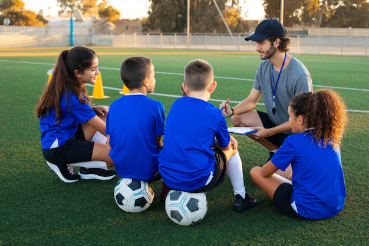
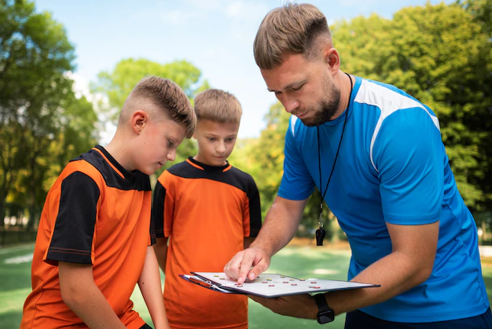

Dirección técnica de fútbol

Módulo 1
- Perfil del director técnico
- Liderazgo
- Gestión de grupo
- Formador - Entrenador

Módulo 2
- Conceptualización
- Técnica
- Táctica
- Estrategia, sistemas de juego y táctica
Módulo 3
- La enseñanza del fútbol en los niños
- Fases sensibles del desarrollo motor
- Métodos de enseñanza de la técnica
- Métodos de la enseñanza ténico-táctico en el fútbol base
Módulo 4
- El entrenamiento del fútbol con juveniles
- Estilos de ensenñanza y aprendidizaje
- Desarrollo del pensamiento táctico
- El modelo de juego
Módulo 5
- Conceptos de planificación
- Metodología integrada
- Microciclo estructurado
- Periodización táctica
 Coaching Deportivo
Coaching Deportivo